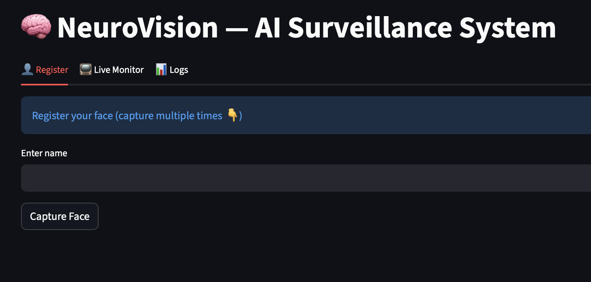
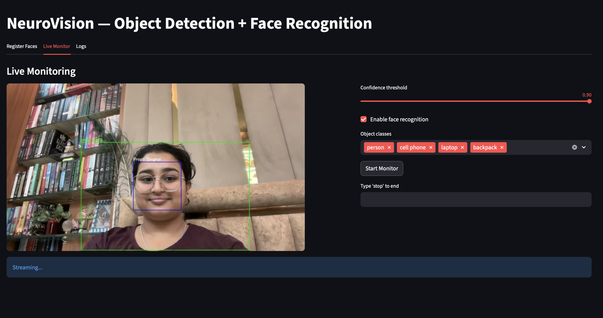
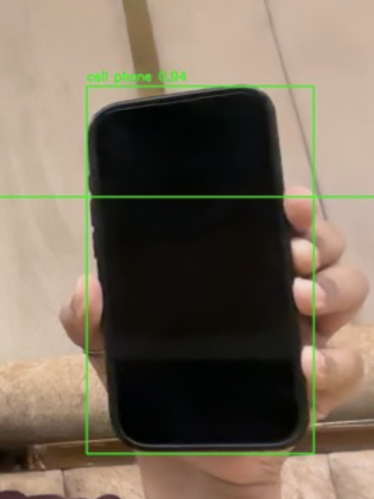
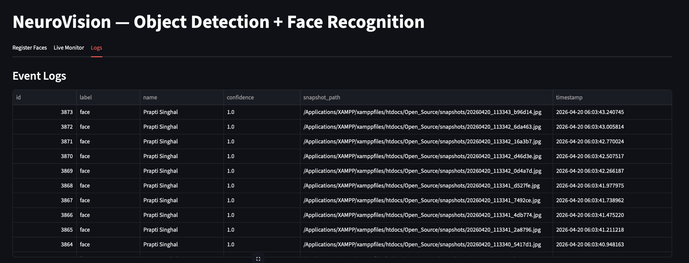

Face Registration Interface – Multi-Capture User Enrollment
System interface for registering users by capturing multiple facial samples for improved recognition accuracy.
This project is an AI-powered system that automates attendance using facial recognition and enhances interaction through real-time object detection. It identifies individuals, marks attendance automatically, and can recognize surrounding objects while providing voice-based greetings.
Tech Used: Python, OpenCV, Face Recognition, Object Detection

System interface for registering users by capturing multiple facial samples for improved recognition accuracy.

Live camera feed with AI-powered detection, bounding boxes, and identity recognition in real time.

Example of object detection identifying a mobile phone with confidence score using bounding box visualization.

Structured log system storing detected faces, timestamps, confidence scores, and snapshot paths for audit and analysis.